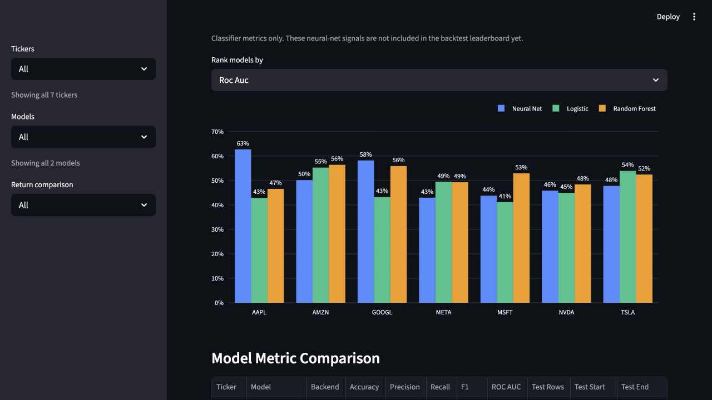

MarketPulse AI
An educational machine-learning laboratory built to practice feature engineering, train different model families, and compare how they behave on the same real-world dataset.

Why I built it
The primary purpose of MarketPulse AI was to experiment with building machine-learning models. Market data provides a noisy, difficult dataset where logistic regression, random forests, and a dense neural network can be trained against the same target and compared with the same metrics. The stock-signal question gives the experiments structure; learning how the models behave is the actual goal.
Pipeline
- Download and validate adjusted historical price and volume data for seven equities and SPY.
- Engineer return, volatility, moving-average, volume, RSI, and MACD features.
- Create a five-day forward-outperformance target relative to the benchmark.
- Compare logistic regression, random forest, and dense neural-network models.
- Run time-aware backtests with transaction costs and decision-threshold sweeps.
- Save machine-readable reports, figures, and dashboard-ready summaries.
Engineering choices
Reproducible modules
Data, features, models, evaluation, and application code are separated into a package with command-line entry points.
Honest chronology
Training and evaluation preserve time order so later observations cannot leak into earlier predictions.
Multiple baselines
Neural results are compared with interpretable classical models rather than presented in isolation.
Verifiable output
Automated tests cover feature construction and backtest behavior; runs produce JSON, CSV, and chart artifacts.
Current status
The working laboratory now supports batch experiments, three model families, neural threshold sweeps, classification-metric comparisons, report generation, and a Streamlit interface. It remains an educational model-building project, not a trading system or financial recommendation.